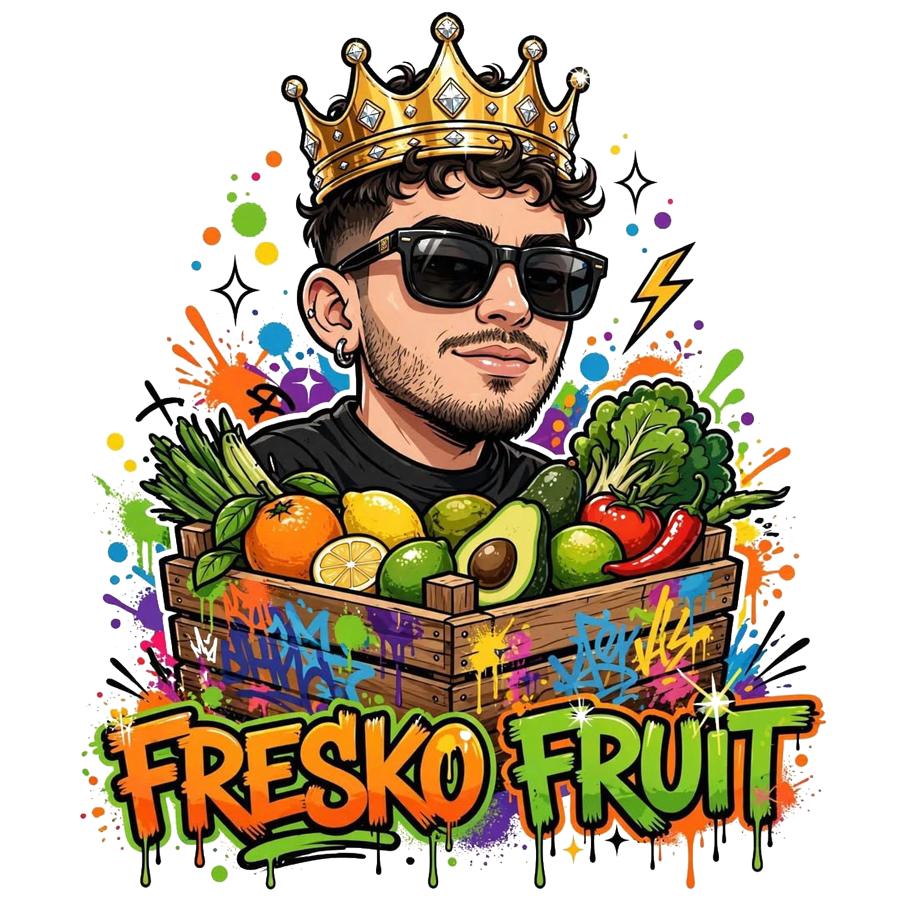
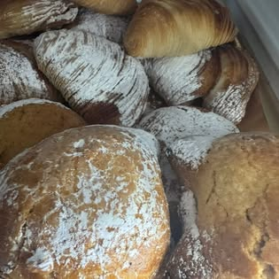
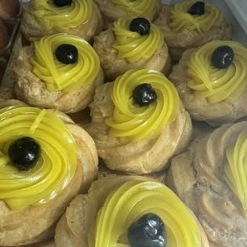
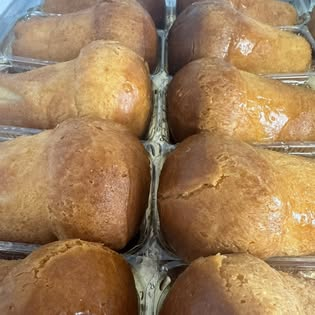
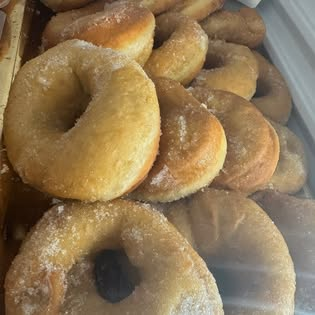
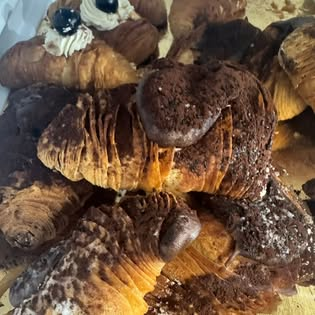
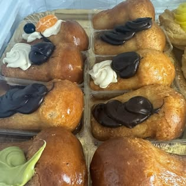
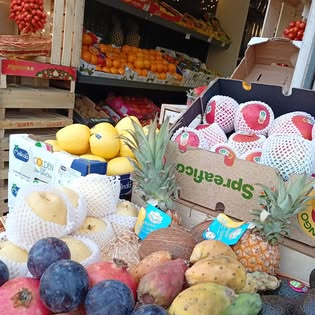

Il re dellafrutta fresca
Frutta e verdura selezionata e dolci napoletani a Borgo Bovio. Ordini su WhatsApp, te li portiamo a casa.

Dolci napoletani Consegna a casa Borgo Bovio, TerniUn pezzo
di Napoli
I dolci della tradizione napoletana, in vetrina accanto alla frutta. Scrivici e prenota i tuoi.






Ogni giorno cambia qualcosa: chiedici cosa c'è oggi.
Vassoiper le feste
Per il pranzo di Natale, un compleanno o un regalo in ufficio: un vassoio di dolci napoletani o un cesto di frutta, preparato da noi.
- Scrivici su WhatsApp quanti siete e cosa ti piace.
- Ti proponiamo il vassoio e ti diciamo il prezzo.
- Lo ritiri in negozio o te lo portiamo a casa.

Frutta e verdura scelta
Prodotti italiani e certificati, dai migliori produttori.
Qualità extraQuello che vedi sul banco, scelto pezzo per pezzo.
Consegna a domicilioFai la spesa su WhatsApp e te la portiamo a casa.
Sempre di stagioneArriva fresca al mattino, finché dura.
Hai un locale?
Forniture di frutta, verdura e dolci a prezzi convenienti, con consegna, per chi ne ha bisogno ogni settimana.
BarRistorantiUfficiHotel
Passa da noi
Seguici su Facebook per vedere cosa arriva ogni giorno.
- Indirizzo
- Via Tre Venezie 27
Borgo Bovio, 05100 Terni - Telefono e WhatsApp
- 347 189 0075
- Orari
- Scrivici per gli orari di oggi